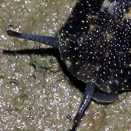
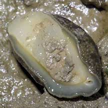
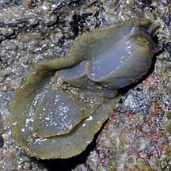
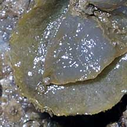
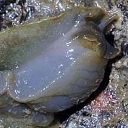

|
|
| sea slugs text index | photo index |
| Phylum Mollusca > Class Gastropoda > sea slugs |
| Onch
slugs Family Onchidiidae updated Jun 2020
Where seen? Onch slugs are common on all our shores, on algae-covered rocks or other hard surfaces, or on mud in mangroves or mangrove tree roots. But they are often well hidden especially on a hot day, or well camouflaged even when moving about in the open. What are onch slugs? Onch slugs belong to Phylum Mollusca and are snails of the Class Gastropoda that lack shells. Onch slugs are NOT nudibranchs! Pulmonate sea slugs such as the Onch slugs of the Family Onchidiidae breathe air through simple lungs or modified gills. Other sea slugs breathe underwater with gills. Here's more on how to tell apart onch slugs from other sea slugs. Features: 1-5cm. Unlike most other snails, they don't have a shell as adults. Instead, they have tough leathery skin to reduce water loss. But like most other snails, they have a broad foot and tiny eyes at the tips of a pair of long fleshy stalks. Most snails have eyes at the base of tentacles. When disturbed, the eye stalks retract under the tough broad body. Onch slugs often blend perfectly with the rocks in both colour and texture! Bits of sand and sediments that get stuck on their skin adds to the camouflage. So please watch your step when you are walking on a rocky shore. |
 Pulau Sarimbun, May 05 |
 Eyes on long thin stalks |
 Broad foot on the underside |
| These slugs belong to the same group as land snails. They have modified
gills, a section of the mantle cavity modified as a lung to breath
air. The opening to this cavity is at their rear ends. At high tide,
they burrow into mud or sand, trapping an air bubble to breathe from. It is hard to tell apart the species in the field. To be sure, we need to look at their internal parts. Onch slug babies: Onch slugs are hermaphrodites, each slug having both male and female reproductive organs. The female opening is at the back and the male organ is on the head next to the right tentacle. |
 Raffles Lighthouse, Jul 06 |
 Leaving behind a grazed patch, and a trail of 'processed algae' Raffles Lighthouse, Jul 06 |
 One pair of tentacles and a pair of oral flaps at the mouth on the underside. Raffles Lighthouse, Jul 06 |
| What do they eat? Onch slugs graze
on film of tiny algae and on lichen that grows on sand, mud and rocks.
They feed at low tide and are more commonly seen on cool mornings
or evenings. They have a pair of oral flaps near the mouth. Slippery slugs: Avoid touching an onch slug as it is very slimy and if you try to pick it up, it generally slips out of your hands to bounce away among the rocks. The poor slug might get hurt and it may not be able to climb back up to where it can find food and safety. |
|
 Underside. |
 |
 |
| Status and threats: One of our mangrove onch slugs (Peronina alta) is listed among the threatened animals of Singapore. Like other creatures of the intertidal zone, they are affected by human activities such as reclamation and pollution. Trampling by careless visitors can also have an impact on local populations. |
| Some Onch slugs on Singapore shores |


| Family
Onchidiidae recorded for Singapore from Wee Y.C. and Peter K. L. Ng. 1994. A First Look at Biodiversity in Singapore. *from Ng, Peter K. L. & N. Sivasothi, 1999. A Guide to the Mangroves of Singapore II (Animal Diversity) in red, listed among the threatened animals of Singapore from Davison, G.W. H. and P. K. L. Ng and Ho Hua Chew, 2008. The Singapore Red Data Book: Threatened plants and animals of Singapore.
|
Links
|